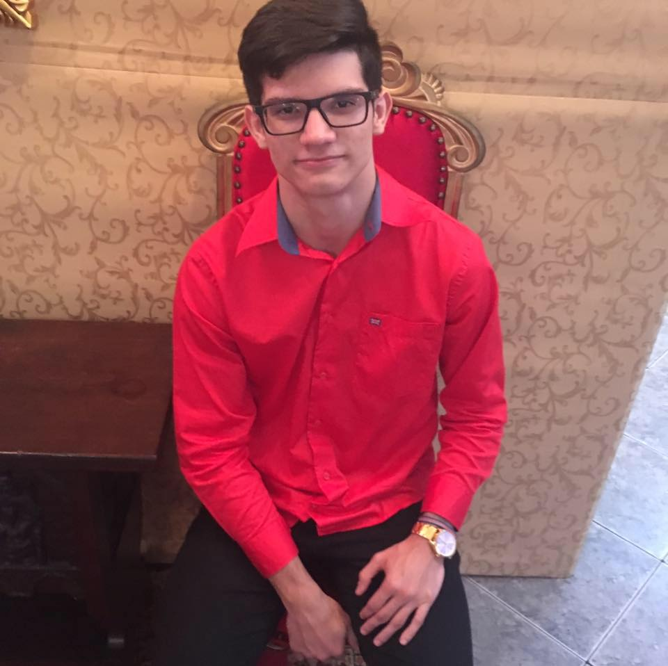

Qualificações Acadêmicas
Sobre mim
Quando viajei para o Rio de Janeiro em 2010. Nós chegamos no Rio de tarde, íamos passear e assistir o jogo no Maracanã. Devido um imprevisto, não fomos ver o jogo e nesse dia houve briga entre torcidas. Acabamos evitando a porradaria e confusão.
Meu time de coração é o Clube de Regatas Vasco da Gama. Sempre fui vascaino, minha família inteira é vascaina e com o convívio acabei torcendo para o mesmo time.
Minha mãe é minha heroína, é meu maior exemplo de pessoa. Ela é minha inspiração em muitos aspectos.
Eu escolhi o curso de informática porque estava com dúvida sobre qual curso fazer na faculdade. Então resolvi fazer informática na Fundação Matias Machline para ter certeza.
© 2019 André Valle